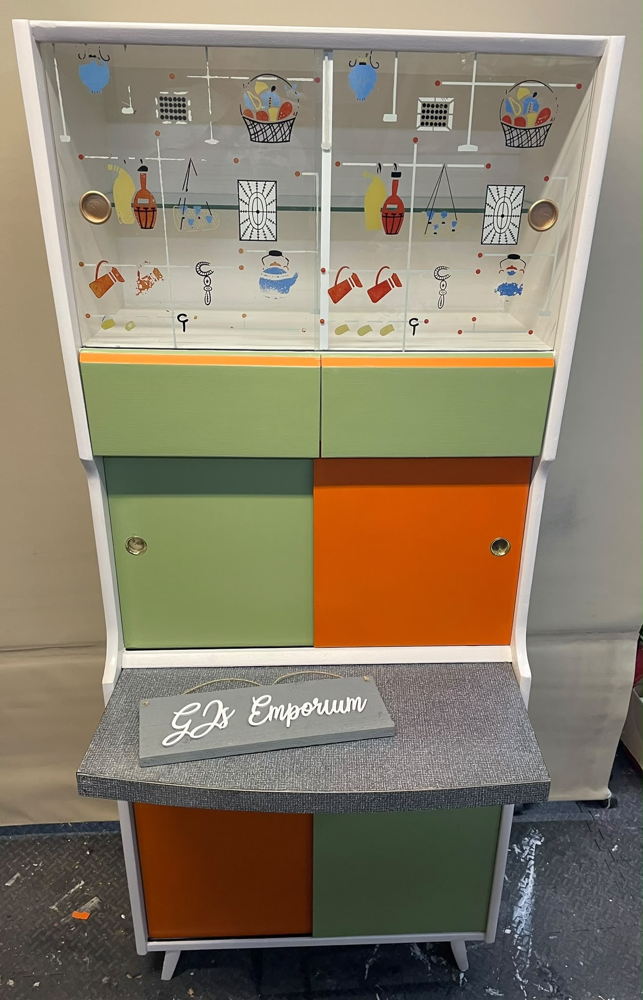

Available
Retro Kitchenette
Colourful retro kitchenette with sliding patterned glass doors, green and orange cupboards, brass-tone handles and a contrasting worktop. One-off piece · Treharris, South Wales
£350Enquire about Retro Kitchenette →